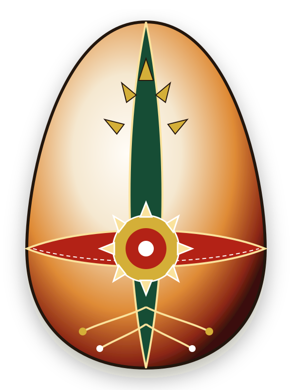

Оксана Савчук — солов’їний голос кіцманської землі
Оксана Василівна Савчук народилася в Кіцмані у родині, де пісня була природною частиною щоденного буття. З дитячих літ вона вбирала мелодику старовинних буковинських наспівів, обрядових гаївок, колядок та народних балад, які століттями звучали на берегах річки Совиці.
Рідний дім у Кіцмані завжди був для співачки фортецею й джерелом натхнення. Її голос — рідкісне за красою лірико-драматичне сопрано кришталевої чистоти — став візитівкою української фольклорної сцени.
Оксана Савчук не лише зберегла автентичні наспіви свого краю, а й піднесла їх на найвищий академічний рівень, ставши кавалером Ордена княгині Ольги та народною артисткою України.